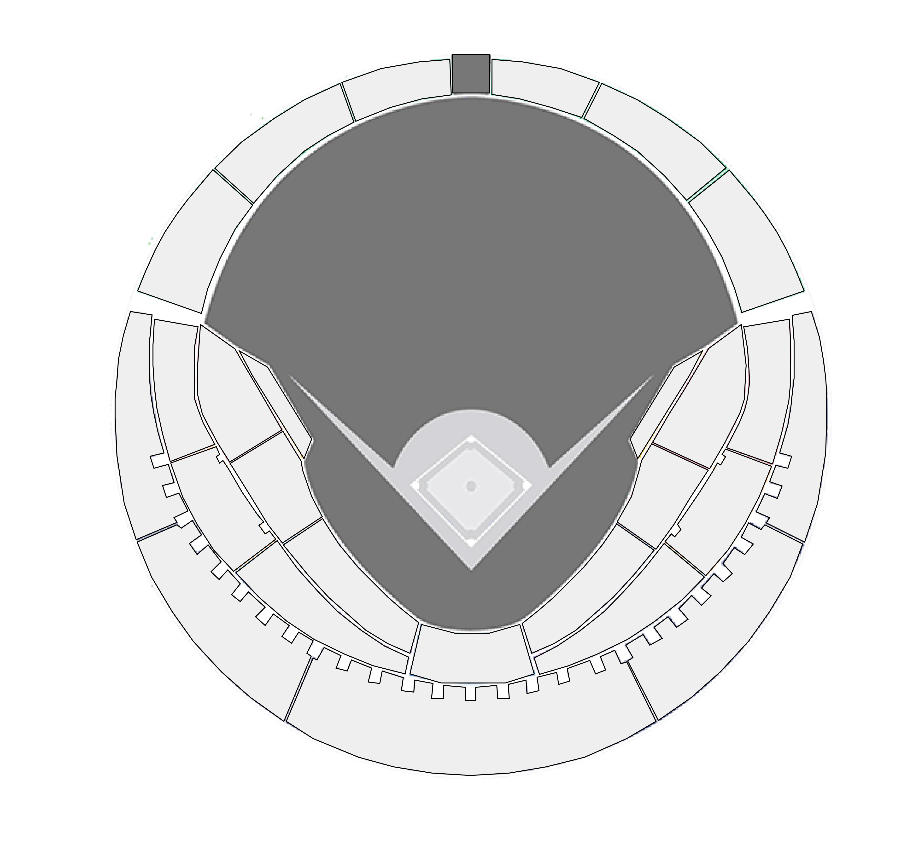

```
<!DOCTYPE html>
<html lang="en">
<head>
    <meta charset="UTF-8">
    <meta name="viewport" content="width=device-width, initial-scale=1.0">
    <title>FOUL MAP</title>
    <link rel="stylesheet" href="foul.css">
    <script
    src="https://code.jquery.com/jquery-3.7.0.min.js"
    integrity="sha256-2Pmvv0kuTBOenSvLm6bvfBSSHrUJ+3A7x6P5Ebd07/g="
    crossorigin="anonymous"></script>
    <script src="foul.js"></script>
</head>

<body>
    <div class='v-line'></div> <!--선택구역과 이미지를 구분하는 세로줄-->
    <div class="canvas-container"> <!--추가해야될 div태그와 canvas속성-->
        <!-- 이미지를 배경으로 갖는 div -->
        
        <canvas id="myCanvas"></canvas>
    </div>
    <span class="foulDB">FOUL MAP</span>
    <br>
    <span class="foulMaker" style="color: rgb(169, 27, 27);">FOUL MAKER
        <button class="helpBtn">?</button>
        <span class="helpMessage1" style="color: black;">FOUL MAKER는 파울을 만들어내는 공격 팀과 타자에 대한 조건을 의미합니다. <br>팀만 선택할 시 해당 팀 타자 전체가 만들어낸 파울 통계를 보여줍니다.</span>
    </span>
    <div class="teamAndBatter"> <!--FOUL MAKER를 선택할 수 있는 부분-->
        <div class="form-group col-sm-5">
            <label for="selectHomeTeam">타자팀 선택:</label>
            <select class="form-control" name="selectHomeTeam" id="selectHomeTeam" onchange="HomeTeam(this)">
                <option>원하는 타자의 팀을 선택해 주세요</option>
                <option value="LG">LG트윈스</option>
                <option value="SSG">SSG랜더스</option>
                <option value="두산">두산베어스</option>
                <option value="NC">NC다이노스</option>
                <option value="롯데">롯데자이언츠</option>
                <option value="KIA">KIA타이거즈</option>
                <option value="KT">KT위즈</option>
                <option value="한화">한화이글스</option>
                <option value="키움">키움히어로즈</option>
                <option value="삼성">삼성라이온스</option>
            </select>
        </div>
        <br>
        <div class="form-group col-sm-4">
            <label for="selectBatter">선수 선택:</label>
            <select class="form-control" name="selectBatter" id="selectBatter">
                <option value="타자선택">====</option>
            </select>
        </div>
    </div>
    <script src="foul.js"></script>
    
<hr style="width: 380px; height: 4px; border: 1; background-color: rgb(92, 96, 93);"> <!--FOUL MAKER와 FOUL INDUCER를 구분하는 가로줄-->


        <span class="foulMaker2" style="color: blue;">FOUL&nbsp;INDUCER
            <button class="helpBtn2">?</button>
            <span class="helpMessage2" style="color: black;">FOUL INDUCER는 파울을 유도해내는 수비 팀과 투수에 대한 조건을 의미합니다. <br>팀만 선택할 시 해당 팀 투수 전체가 유도해낸 파울통계를 보여줍니다.</span>
        </span>
    </div>


    <div class="optionAll">
        <div>
            <div class="teamAndPitcher">
                <div class="form-Group col-sm-5">
                    <label for="selectAwayTeam">상대팀 선택:</label>
                    <select class="form-Control" name="selectAwayTeam" id="selectAwayTeam" onchange="selectAwayTeam(this)">
                        <option>상대팀을 선택해주세요.</option>
                        <option value="LG">LG트윈스</option>
                        <option value="SSG">SSG랜더스</option>
                        <option value="두산">두산베어스</option>
                        <option value="NC">NC다이노스</option>
                        <option value="롯데">롯데자이언츠</option>
                        <option value="KIA">KIA타이거즈</option>
                        <option value="KT">KT위즈</option>
                        <option value="한화">한화이글스</option>
                        <option value="키움">키움히어로즈</option>
                        <option value="삼성">삼성라이온스</option>
                    </select>
                </div>
                <br>
                <div class="form-Group col-sm-4">
                    <label for="selectPitcher">선수 선택:</label>
                    <select class="form-control" name="selectPitcher" id="selectPitcher">
                        <option value="투수선택">====</option>
                    </select>
                </div>
            </div>
        </div>
        <!--여기까지 옵션중에서 투수를 고르는 부분-->
        <div id="toggleSwitch"> <!--토글 스위치를 아직 만들지는 못했음;;-->
            <div class="rate">
                <span style="width: 50%">카운트 선택:</span>
            
                <fieldset class="rate"> <!--토글을 만들었을 때 이부분을 보여주면 됨(아래는 저번에 준혁님이 알려주신대로 해본 거라서 신경X)-->
                    <input type="radio" id="rating6" name="rating" value="3"><label for="rating6" title="3점"></label>
                    <input type="radio" id="rating4" name="rating" value="2"><label for="rating4" title="2점"></label>
                    <input type="radio" id="rating2" name="rating" value="1"><label for="rating2" title="1점"></label>
                </fieldset>
            </div>
        </div>
        <input id="searchBtn" type="button" value="조회"/>
    </div>
    <div class="rate"> <!--여긴 아마 저번에 별점채워지는 그부분 때문에 설정된거 같음-->
        <span style="width: 50%"></span>
    </div>
</body>
</html>
```
